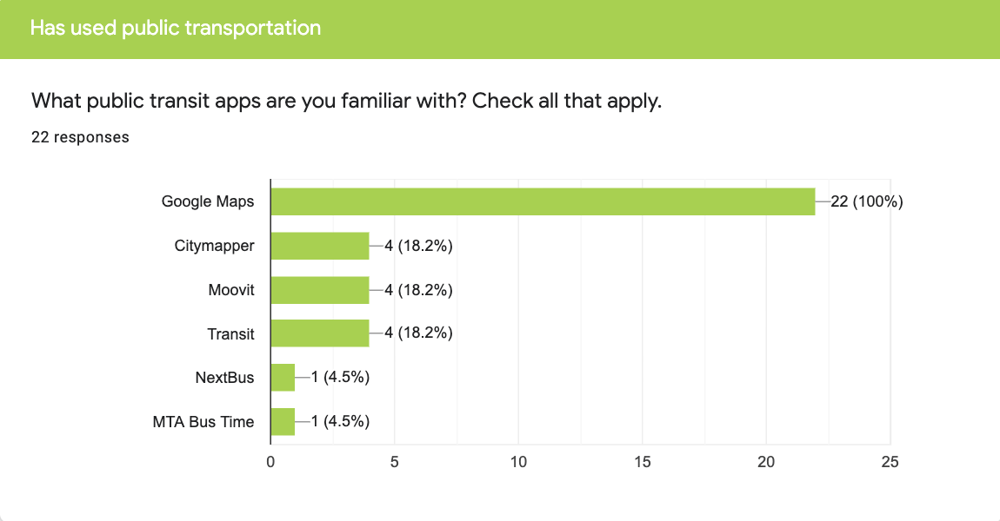
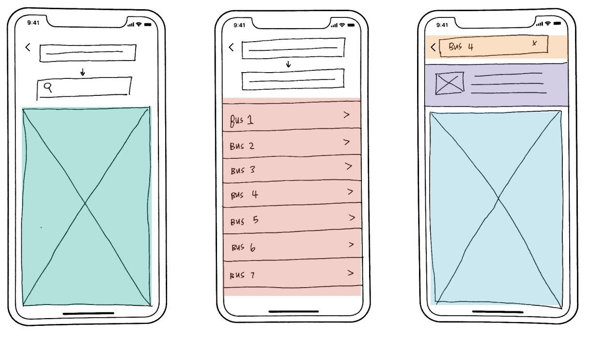
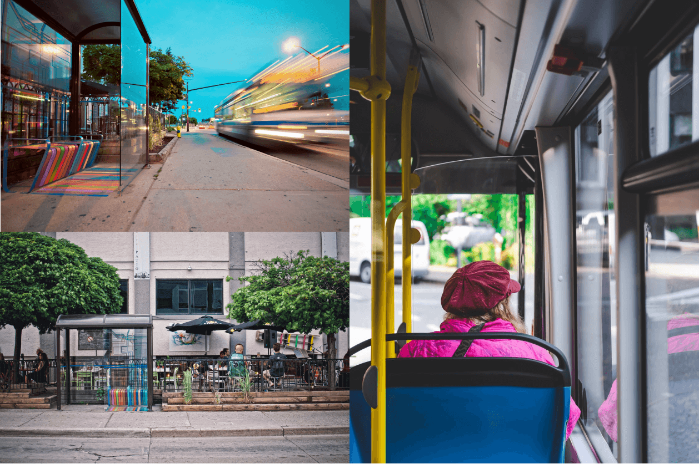
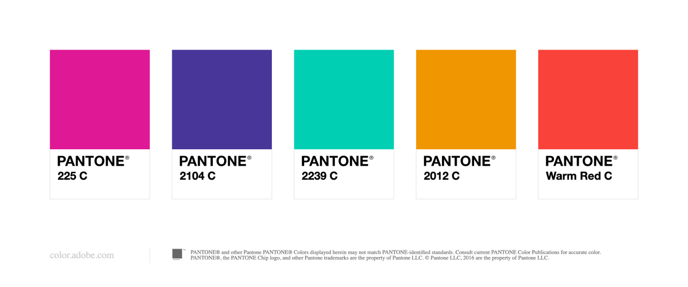

BusyBus is a local transit app that helps thousands of commuters get to their destination.
Overview
With more and more locals taking public transportation, the local transit system has decided to expand the number of bus lines at each stop. However, with the added lines, riders were now unsure of when their bus would arrive. My job was to come up with a solution that would provide information to users to help them easily navigate through local transit systems.
Role & Duration
UX Designer
Research, Information Architecture, Interaction, Visual Design & Testing
Jun 2019 - Jul 2019
Problem
Transit officials have identified a problem. Due to expansion, numerous bus routes have been added and many of those routes stop at the same bus stop. Riders want to know what the next arriving bus is and how much time they have to get to a bus stop.
The specific stop that I was solving for was the bus stop on Washington and State, which currently has seven bus lines running there.
Solution
Visual Map: a visual map identifies the current location of the user. It also shows bus stops near the user.
Live Traffic Updates:when users inputs which bus they would like to take. BusyBus will provide live traffic notifications on the status of the bus.
Bus Schedule:once a user identifies their bus location. A list of buses that runs through that stop will be shown.
Discovery Phase
As a local from Los Angeles, I was unfamiliar with how public transportation worked. I had to find friends/colleagues that were located in San Francisco to understand how they use public transportation. I put together a survey and sent it out to this audience. A majority of the survey questions consists of asking how long the participant had been involved with public transportation. What were the pros and cons to using a public transit app? The results from my survey helped me better understand how public transportation is used from their viewpoints. I also was able to have a better idea of the user’s wants and needs for these mobile applications. From the results, I found out that about 50% of participants used public transportation twice a week and 23% used it five plus days. The main reason to using public transportation was due to work commutes, affordability, and convenience.
In the survey, I asked about struggles that users faced with public transit apps. 27% of users said navigation wasn’t always accurate, 18% said buses were usually never on time, and lastly a lot of features were buried within tabs.
I was curious to what features were important to participants, and had participants rank out from most to least importance a list of features that I had given to them. These features included: Navigation, Bus Schedules, Arrival Notifications, Offline Maps, and Integrattions with Uber and Lyft. 55% of participants placed navigation as most important, which was followed by 32% of participants that said bus schedule. Towards the end of the survey, I asked users to name features that they would like to see that they currently didn’t have. Users said that they wanted to obtain live traffic notifications on the status of their bus, and that it would be neat to have photos of bus stops to better identify where they are going.

Competitive Analysis
Having familiarized myself with the behaviors of users with mobile transit apps. I did research on competitors within the marketspace. From the survey, the two competitors most used from my participants were Google Maps and Moovit. There were some common similarities that I noticed in researching the two. Both apps home page showed a defaut of a user’s location, features in the app were usually buried within tabs, and navigation was bias towards a specific source of transportation. Google Maps focused on car navigation, whereas, Moovit only supported navigation with bus users.
For BusyBus to enter the marketspace, I needed to create a feature that would send instant notification updates to their users on bus schedules. BusyBus also needs to send users daily real time traffic updates on when their bus/trains were arriving. Since the primarily mode of transportation for BusyBus would be local transportation. For future improvements, I want to provide images of bus stops and navigational maps in metro stations. As stated in the struggles with participants, I recognized that public transportation can be convenient and affordable, however, it can also be stressful. Therefore, I want to provide these features to users so they can view BusyBus as a helpful tool.
Information Architecture Phase
Having gained a better understanding of my users and marketspace. It was time to create user stories and user flows. In my sketch, I wanted to incorporate the results from my survey and market research to create user stories.
I want to be able to get from point A to point B”
“I want to view bus schedules”
“I want to receive notifications on my bus”
“I want to see a map with my location and bus location”
“I want to be able to easily navigate within the app”

The above sketch shows a low-fidelity mock up of how BusyBus would look like. The first screen would show a map of the user’s current location. The input fields on top will be where users fill our their location and where they would like to go. Once both fields are filled out, BusyBus will find the bus stop closest to the location , and show all the buses running at that stop. Users select which bus they want to take, and BusyBus will show the location of the bus in regards to the user’s location. Live notification updates will be shown above the map that tells users the whereabouts of the bus.
Usability Testing
I wanted to see if the flow of my screens would be understood with the user. I tested the three screens above with in-person interviews. I interviewed four participants who used public transportation and were familiar with public transit apps. From the interviews, I saw that participants were able to guide me through the screens. They overall understood the flow of the screens, and was able to tell me the functionality of each screen. However, some users were unfamiliar of what an image placeholder look like. Users also wanted to see more informaton on bus lines. Lastly, participants were confused on what bus notifications were. They believed that that container stored the address of the bus stop.
With their feedback, I refined my design by adding a detailed map on the first screen. For bus notifications, I added icons and copy to signify a bus’ arrival time. Lastly, I added bus arrival times and bus activity.
Branding & Identity Phase
The initial steps of branding BusyBus was find some photos for inspiration. I wanted a clean interface, and wanted to be wary of incorporating too many colors for the initial design. The accent color that I decided to move forward would be the turquoise green. I liked how it can easily be interpreted in different ways. For a product pertaining to public transportation, the color green could reflect how BusyBus is eco-friendly. The green can also used to show if a bus line was active.


With my original design concept of BusyBus, I thought that by assigning different bus lines its’ own color, that would help users establish that these bus lines were different. However, as a I looked at it from afar, I saw that it was hard to read some of the fonts and would not be user-friendly for users that are color blind. Also, the overall design looked distracting , and it clashed with my accent green color. Therefore, for the next iteration of my design, I looked into simplifying the design by making all bus lines the same color.
Conclusion
I believe that I identified a great target audience for the product. I was able to look at the transition of jobs becoming more and more remote. I used my observations as an advantage to finding my audience.
In considering future developments of the current product, I want to send out surveys targeting remote work professionals. From the surveys, I’m hoping to create more features that are gauged towards my specific audience. I liked how I used my personal experiences as a freelancer to help my drive ClearBox’s branding. In the next steps of design, I’d like to place my focus in having the product be more malleable to the user.
I believe these goals listed above can be achieved through user research, ideation, prototyping, wireframing and usability testings.